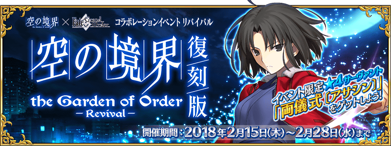

本頁面資訊僅供參考，實際情況請以遊戲內資料為準。
由於直接使用官方翻譯，可能會與其他站內翻譯相異，敬請見諒。
其他公告內容請參照日版當時公告翻譯。
| 活動相關從者 | ||
|---|---|---|
|
| ||
| 活動限定效果 | ||
 |
| 黑貓模型的掉落獲得數增加1個(最大解放:2個) |
|
| 草莓冰淇淋的掉落獲得數增加1個(最大解放:2個) |
|
| 礦泉水的掉落獲得數增加1個(最大解放:2個) |
 |
| 〔七人御佐姬〕的追加出現率提升25%(最大解放:50%) |
|
| 〔素體〕的追加出現率提升25%(最大解放:50%) |
|
| 〔屍人〕的追加出現率提升25%(最大解放:50%) |
|
| 〔公寓靈、骷髏兵〕的追加出現率提升25%(最大解放:50%) |
採用GoogleDrive資料夾呈現
| 任務 | 獎勵 | 解鎖條件 |
|---|---|---|
| No.1 探索『101室』 | 9/11 13:00後 | |
| No.2 探索『102室』 | 達成：No.11 | |
| No.3 探索『104室』 | 達成：No.2 | |
| No.4 探索『204室』 【任務完成後開放『任務No.35』】 | 通過：二樓 三號室 | |
| No.5 探索『304室』 【任務完成後開放『任務No.39』】 | 達成：No.4 | |
| No.6 探索『404室』 【任務完成後開放『任務No.18』】 | 達成：No.5 | |
| No.7 探索『504室』 | 達成：No.6 | |
| No.8 探索『604室』 | 達成：No.49 | |
| No.9 探索『704室』 | 達成：No.8 | |
| No.10 探索『804室』 | 500 | 達成：No.72 |
| No.11 擊敗10個『屍人』 【任務完成後開放『102號室』】 | 5 | 達成：No.1 |
| No.12 擊敗50個『屍人』 | 10 | 達成：No.11 |
| No.13 擊敗100個『屍人』 | 15 | 達成：No.12 |
| No.14 擊敗200個『屍人』 【任務完成後開放『702號室』】 | 10 | 達成：No.8 |
| No.15 擊敗20個『公寓靈』 【任務完成後開放『103號室』】 | 5 | 達成：No.2 |
| No.16 擊敗50個『公寓靈』 | 10 | 達成：No.15 |
| No.17 擊敗100個『公寓靈』 | 15 | 達成：No.16 |
| No.18 擊敗200個『公寓靈』 【任務完成後開放『504號室』】 | 10 | 達成：No.6 |
| No.19 擊敗20個『骷髏』 【任務完成後開放『202號室』】 | 5 | 達成：No.3 |
| No.20 擊敗50個『骷髏』 | 10 | 達成：No.19 |
| No.21 擊敗100個『骷髏』 | 15 | 達成：No.20 |
| No.22 擊敗200個『骷髏』 【任務完成後開放『503號室』】 | 5 | 達成：No.6 |
| No.23 擊敗20個『素體』 【任務完成後開放『203號室』】 | 5 | 通過：二樓 一號室 |
| No.24 擊敗50個『素體』 | 10 | 達成：No.23 |
| No.25 擊敗100個『素體』 | 15 | 達成：No.24 |
| No.26 擊敗200個『素體』 【任務完成後開放『701號室』】 | 5 | 達成：No.8 |
| No.27 擊敗10騎擁有『男性』特性的從者 【任務完成後開放『302號室』】 | 5 | 達成：No.4 |
| No.28 擊敗20騎擁有『男性』特性的從者 | 5 | 達成：No.27 |
| No.29 擊敗30騎擁有『男性』特性的從者 | 5 | 達成：No.28 |
| No.30 擊敗40騎擁有『男性』特性的從者 | 達成：No.29 | |
| No.31 擊敗10騎擁有『女性』特性的從者 【任務完成後開放『301號室』】 | 5 | 達成：No.4 |
| No.32 擊敗20騎擁有『女性』特性的從者 | 5 | 達成：No.31 |
| No.33 擊敗30騎擁有『女性』特性的從者 | 5 | 達成：No.32 |
| No.34 擊敗40騎擁有『女性』特性的從者 | 達成：No.33 | |
| No.35 擊敗30個『七人御佐姬』 【任務完成後開放『304號室』】 | 2 | 達成：No.4 |
| No.36 擊敗60個『七人御佐姬』 | 3 | 達成：No.35 |
| No.37 擊敗100個『七人御佐姬』 | 4 | 達成：No.36 |
| No.38 擊敗200個『七人御佐姬』 【任務完成後開放『802號室』】 | 5 | 達成：No.9 |
| No.39 擊敗15騎『Assassin』職階的從者 【任務完成後開放『404號室』】 | 5 | 達成：No.5 |
| No.40 擊敗25騎『Assassin』職階的從者 | 5 | 達成：No.39 |
| No.41 擊敗15騎『Rider』職階的從者 | 5 | 達成：No.5 |
| No.42 擊敗25騎『Rider』職階的從者 | 5 | 達成：No.41 |
| No.43 擊敗15騎『Berserker』職階的從者 | 5 | 達成：No.5 |
| No.44 擊敗25騎『Berserker』職階的從者 | 5 | 達成：No.43 |
| No.45 擊敗10騎擁有『神性』特性的從者 【任務完成後開放『502號室』】 | 5 | 達成：No.6 |
| No.46 擊敗15騎擁有『神性』特性的從者 | 5 | 達成：No.45 |
| No.47 擊敗20騎擁有『神性』特性的從者 | 5 | 達成：No.46 |
| No.48 擊敗25騎擁有『神性』特性的從者 | 5 | 達成：No.47 |
| No.49 擊敗10名『長髮公主』 【任務完成後開放『604號室』】 | 達成：No.7 | |
| No.50 擊敗10騎擁有『惡』屬性的從者 【任務完成後開放『602號室』】 | 5 | 達成：No.7 |
| No.51 擊敗20騎擁有『惡』屬性的從者 | 5 | 達成：No.50 |
| No.52 擊敗30騎擁有『惡』屬性的從者 | 5 | 達成：No.51 |
| No.53 擊敗40騎擁有『惡』屬性的從者 | 達成：No.52 | |
| No.54 擊敗10騎擁有『混沌』屬性的從者 【任務完成後開放『601號室』】 | 5 | 達成：No.7 |
| No.55 擊敗20騎擁有『混沌』屬性的從者 | 5 | 達成：No.54 |
| No.56 擊敗30騎擁有『混沌』屬性的從者 | 5 | 達成：No.55 |
| No.57 擊敗40騎擁有『混沌』屬性的從者 | 達成：No.56 | |
| No.58 通關『所有一樓的房間』 | 10 | 達成：No.2 |
| No.59 通關『所有二樓的房間』 | 10 | 達成：No.3 |
| No.60 通關『所有三樓的房間』 | 10 | 達成：No.4 |
| No.61 通關『所有四樓的房間』 | 10 | 達成：No.5 |
| No.62 通關『所有五樓的房間』 | 10 | 達成：No.6 |
| No.63 通關『所有六樓的房間』 | 10 | 達成：No.7 |
| No.64 通關『所有七樓的房間』 | 10 | 達成：No.8 |
| No.65 通關『所有八樓的房間』 | 達成：No.9 | |
| No.66 通關『所有樓層的一號室』 | 達成：No.9 | |
| No.67 通關『所有樓層的二號室』 【任務完成後開放『803號室』】 | 5 | 達成：No.9 |
| No.68 通關『所有樓層的三號室』 | 5 | 達成：No.9 |
| No.69 通關『所有樓層的四號室』 | 5 | 達成：No.9 |
| No.70 通關『三樓為止的所有房間』 【任務完成後開放『402號室』】 | 達成：No.4 | |
| No.71 通關『六樓為止的所有房間』 【任務完成後開放『703號室』】 | 達成：No.7 | |
| No.72 通關『除804室以外的所有房間』 【任務完成後開放『804號室』】 | 達成：No.9 | |
| No.73 累計通關『一樓的房間』10次 | 達成：No.2 | |
| No.74 累計通關『二樓的房間』10次 | 達成：No.3 | |
| No.75 累計通關『三樓的房間』10次 | 達成：No.4 | |
| No.76 累計通關『四樓的房間』10次 | 達成：No.5 | |
| No.77 累計通關『五樓的房間』10次 | 達成：No.6 | |
| No.78 累計通關『六樓的房間』10次 | 達成：No.7 | |
| No.79 累計通關『七樓的房間』10次 | 達成：No.8 | |
| No.80 累計通關『八樓的房間』10次 | 達成：No.9 | |
| No.81 完成30個任務 【任務完成後開放『森林之中』】 | 達成：No.3 | |
| No.82 完成60個任務 【任務完成後開放『停車場』】 | 達成：No.81 | |
| No.83 完成90個任務 | 達成：No.82 | |
| No.84 累計獲得100瓶『礦泉水』 | 5 | 達成：No.2 |
| No.85 累計獲得500瓶『礦泉水』 | 6m | 達成：No.84 |
| No.86 累計獲得100杯『草莓冰淇淋』 | 5 | 達成：No.2 |
| No.87 累計獲得500杯『草莓冰淇淋』 | 6m | 達成：No.86 |
| No.88 累計獲得100個『黑貓模型』 | 5 | 達成：No.2 |
| No.89 累計獲得500個『黑貓模型』 | 6m | 達成：No.88 |
| No.90 『兩儀式〔Assassin〕』正式加入 | 5 | 達成：No.7 |
| No.91 『兩儀式〔Assassin〕』完成靈基再臨第1階段 | 5 | 達成：No.90 |
| No.92 『兩儀式〔Assassin〕』完成靈基再臨第2階段 | 10 | 達成：No.91 |
| No.93 『兩儀式〔Assassin〕』達到羈絆等級1級 | 5 | 達成：No.90 |
| No.94 『兩儀式〔Assassin〕』達到羈絆等級2級 | 10 | 達成：No.93 |
| No.95 『兩儀式〔Assassin〕』達到羈絆等級3級 | 15 | 達成：No.94 |
| No.96 『兩儀式〔Assassin〕』達到羈絆等級4級 | 5 | 達成：No.95 |
| No.97 『兩儀式〔Assassin〕』達到羈絆等級5級 | 5 | 達成：No.96 |
| No.98 獲得『隱藏鑰匙』 【任務完成後開放『明之境界』】 | 9/11 13:00後 | |
| No.99 探索『屋頂』 | 500 | 達成：No.98 |
| No.100 完成所有任務 【任務完成後開放『屋頂』】 | 達成：No.3 |
| 黑貓模型 | |||
|---|---|---|---|
| 交換物 | 需求數 | 限制 | 共需 |
| 100 | 5 | 500 | |
| 150 | 2 | 300 | |
| 25 | 10 | 250 | |
| 20 | 20 | 400 | |
| 15 | 20 | 300 | |
| 10 | 20 | 200 | |
| 10 | 20 | 200 | |
| 10 | 20 | 200 | |
| 10 | 20 | 200 | |
| 10 | 20 | 200 | |
| 10 | 20 | 200 | |
| 10 | 20 | 200 | |
| 1 | 1,000 | 1,000 | |
| 1 | 0 | 0 | |
| 合計 | 4,150 | ||
| 草莓冰淇淋 | |||
|---|---|---|---|
| 交換物 | 需求數 | 限制 | 共需 |
| 100 | 5 | 500 | |
| 150 | 1 | 150 | |
| 20 | 20 | 400 | |
| 15 | 20 | 300 | |
| 15 | 20 | 300 | |
| 10 | 20 | 200 | |
| 10 | 20 | 200 | |
| 10 | 20 | 200 | |
| 10 | 20 | 200 | |
| 10 | 20 | 200 | |
| 10 | 20 | 200 | |
| 10 | 20 | 200 | |
| 10 | 0 | 0 | |
| 合計 | 3,050 | ||
| 礦泉水 | |||
|---|---|---|---|
| 交換物 | 需求數 | 限制 | 共需 |
| 100 | 4 | 400 | |
| 100 | 5 | 500 | |
| 150 | 1 | 150 | |
| 10 | 20 | 200 | |
| 10 | 20 | 200 | |
| 2 | 100 | 200 | |
| 1 | 100 | 100 | |
| 10 | 30 | 300 | |
| 10 | 30 | 300 | |
| 10 | 20 | 200 | |
| 10 | 20 | 200 | |
| 10 | 20 | 200 | |
| 10 | 20 | 200 | |
| 10 | 20 | 200 | |
| 10 | 20 | 200 | |
| 10 | 20 | 200 | |
| 10 | 0 | 0 | |
| 合計 | 3,750 | ||